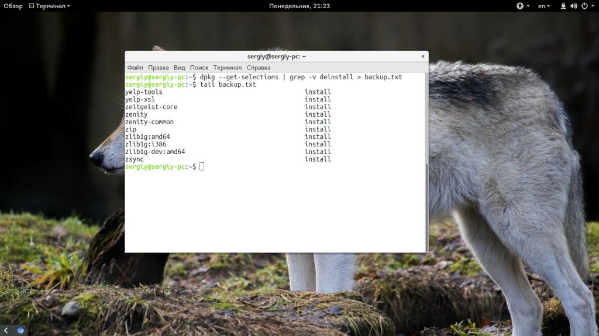
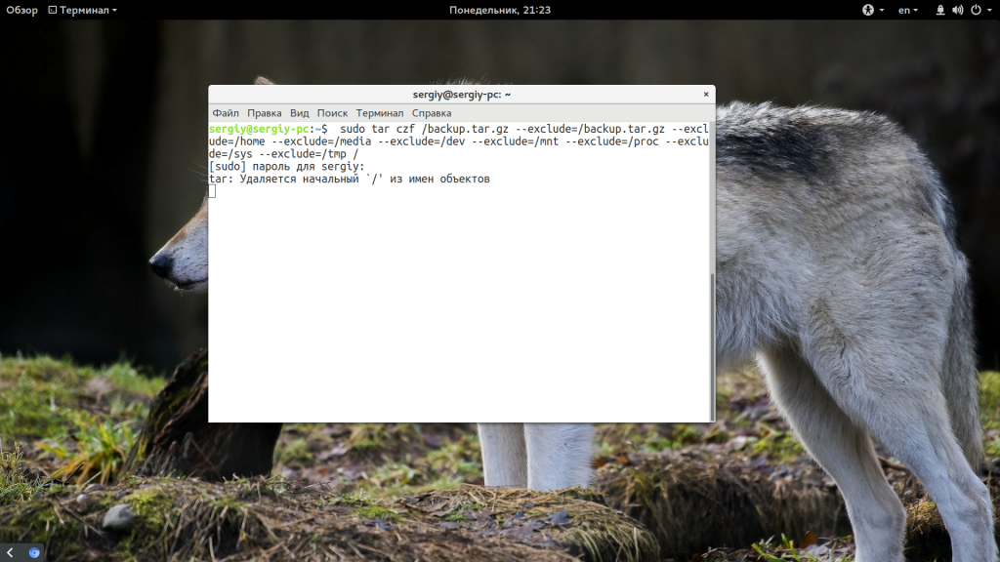

sudo rsync -Wvt --recursive --delete /home/alensav/.config/mytetra/data /home/alensav/Dropbox
# Синхронизация с Dropbox
*** sudo rsync -Wvt --recursive --delete /home/alensav/mytetra_1_42_2_lin_32/data /home/alensav/Dropbox
# Синхронизация с Time_Capsule
** sudo rsync -Wvt --recursive --delete /home/alensav/mytetra_1_42_2_lin_32/data /media/capsule/MyTetra/data
#Архивирование XEoma на Time_Capsule
sudo rsync -vagt --recursive --ignore-existing /home/Xeoma/XeomaArchive/Preview+Archive.6 /media/capsule/camera_orang
#Архивирование Ubuntu 16.04
#rsync -aAXv --exclude={"/dev/*","/proc/*","/sys/*","/tmp/*","/run/*","/mnt/*","/media/*","/lost+found"} / /папка/назначения
rsync -aAXvr --delete --exclude={"/dev/*","/proc/*","/sys/*","/tmp/*","/run/*","/mnt/*","/media/*","/lost+found"} / /media/capsule/UbuntARHIV
#Архивирование Orangepi с помощью dd
sudo dd if=/dev//mmcblk0p2 of=/media/capsule/OrangPI/backup.img
Главная
Резервное копирование Ubuntu
Резервное копирование Ubuntu
Инструкции Июнь 11, 2017 21 admin
Резервное копирование системы очень важно, поскольку если у вас есть резервная копия всех файлов, настроек или даже системы полностью, то вы можете ее восстановить в случае возникновения проблем. Несмотря на стабильность Linux, эта система может ломаться, например, после обновления или когда вы экспериментировали и сделали что-то не так.
Если вы делаете резервное копирование Ubuntu, то потом сможете все очень просто восстановить, даже если система была почти убита. Уже существует множество программ для создания резервных копий как файлов, так и всего диска, одна из самых популярных из них - это CloneZilla. Но мы не будем их сегодня рассматривать. В этой статье мы поговорим о том, как выполнить резервное копирование системы без сторонних программ, с помощью системных команд. Это может быть полезнее в некоторых случаях.
Рассмотрим самые распространенные способы копирования среди администраторов и обычных пользователей.
Самый простой способ резервного копирования Ubuntu, кстати, именно эту возможность использует MintBackup в LinuxMint, это получение списка всех установленных пакетов. Да, тут вы не сохраните всю конфигурацию, зато сможете очень быстро восстановить все установленные программы.
Если учесть, что большинство конфигурационных файлов находятся в домашней папке пользователя, а она не стирается при переустановке, то остальные файлы не такая уже большая проблема. А такая резервная копия будет занимать всего несколько килобайт. Для выполнения резервной копии наберите такую команду:
dpkg --get-selections | grep -v deinstall > backup.txt

Далее, скопируйте полученный файл в надежное место. Когда система сломается, переустановите ее с установочного носителя, а затем просто выполните команды:
sudo dpkg --set-selections < backup.txt
sudo apt-get -y update
$ sudo apt-get dselect-upgrade
Файл со списком пакетов нужно поместить в текущую папку. Таким образом, вы очень быстро вернете все ранее установленные программы с минимальными затратами времени и в то же время получите чистую систему.
Резервное копирование таким способом более надежно, поскольку вы не просто создаете список установленных программ, а делаете архив из всей файловой системе. Фактически, вы можете потом развернуть этот архив на любой машине и получить полноценную операционную систему после настройки драйверов.
Таким способом часто создаются резервные копии систем на серверах и для него достаточно просто использовать утилиту tar и не нужны сторонние программы. Для создания архива используйте такую команду:
sudo tar czf /backup.tar.gz --exclude=/backup.tar.gz --exclude=/home --exclude=/media --exclude=/dev --exclude=/mnt --exclude=/proc --exclude=/sys --exclude=/tmp /

В этой команде все достаточно просто несмотря на ее запутанность. Опция c означает, что нужно создать архив (Create), z - включает сжатие Gzip. Затем с помощью опции -f мы указываем файл, в который нужно сохранить результат. Затем с помощью серии опций --exclude мы исключаем из архива сам файл архива, домашний каталог и директории с виртуальными файловыми системами. В самом конце указываем папку, с которой стоит начать сбор данных - /. Вот и все. Процесс займет очень много времени, но когда он завершится, вы получите полную резервную копию системы в корневом каталоге.
Если система повреждена, вам нужно загрузиться с LiveCD/USB, и примонтировать корневой каталог в /mnt/. Затем подключите носитель с резервной копией и выполните команду для распаковки:
sudo tar xf /run/media/имя_носителя/backup.tar.gz -C /mnt
Команда быстро распакует все, что было сохранено и вам останется только перезагрузить компьютер, чтобы вернуться к своей основной системе. Здесь не восстанавливается только загрузчик, восстановить Grub нужно отдельно если он был поврежден.
Способ 3. Резервное копирование в rsync
Этот способ очень похож на второй, но здесь архив не создается, а данные просто переносятся в другую папку. Это может более полезно при простом копировании операционной системы в другое место. Команда выглядит вот так:
rsync -aAXv --exclude={"/dev/*","/proc/*","/sys/*","/tmp/*","/run/*","/mnt/*","/media/*","/lost+found"} / /папка/назначения